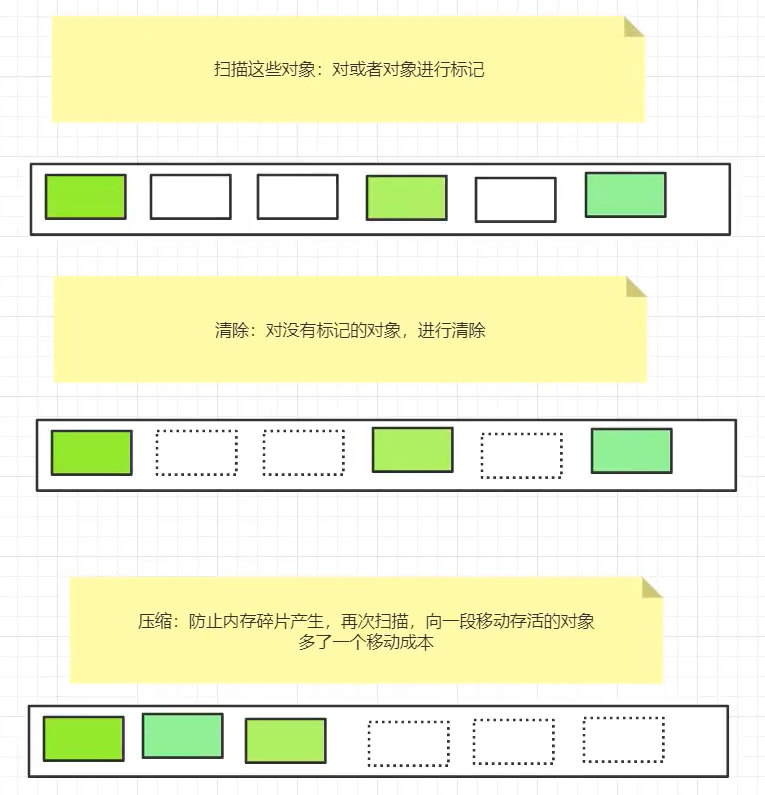

<!DOCTYPE html>


<html lang="zh-Hans">
  

    <head>
      <meta charset="utf-8" />
        
      <meta name="description" content="Technical output and problem solving record" />
      
      <meta
        name="viewport"
        content="width=device-width, initial-scale=1, maximum-scale=1"
      />
      <title>Java Virtual Machine初探 |  Tunan`s Blog</title>
  <meta name="generator" content="hexo-theme-ayer">
      
      <link rel="shortcut icon" href="/favicon.ico" />
       
<link rel="stylesheet" href="/dist/main.css">

      <link
        rel="stylesheet"
        href="https://cdn.jsdelivr.net/gh/Shen-Yu/cdn/css/remixicon.min.css"
      />
      
<link rel="stylesheet" href="/css/custom.css">
 
      <script src="https://cdn.jsdelivr.net/npm/pace-js@1.0.2/pace.min.js"></script>
       
 

      <link
        rel="stylesheet"
        href="https://cdn.jsdelivr.net/npm/@sweetalert2/theme-bulma@5.0.1/bulma.min.css"
      />
      <script src="https://cdn.jsdelivr.net/npm/sweetalert2@11.0.19/dist/sweetalert2.min.js"></script>

      <!-- mermaid -->
      
      <style>
        .swal2-styled.swal2-confirm {
          font-size: 1.6rem;
        }
      </style>
    </head>
  </html>
</html>


<body>
  <div id="app">
    
      
    <main class="content on">
      <section class="outer">
  <article
  id="post-JVM初探"
  class="article article-type-post"
  itemscope
  itemprop="blogPost"
  data-scroll-reveal
>
  <div class="article-inner">
    
    <header class="article-header">
       
<h1 class="article-title sea-center" style="border-left:0" itemprop="name">
  Java Virtual Machine初探
</h1>
 

      
    </header>
     
    <div class="article-meta">
      <a href="/2021/03/11/JVM%E5%88%9D%E6%8E%A2/" class="article-date">
  <time datetime="2021-03-11T13:21:26.000Z" itemprop="datePublished">2021-03-11</time>
</a> 
  <div class="article-category">
    <a class="article-category-link" href="/categories/JVM/">JVM</a>
  </div>
  
<div class="word_count">
    <span class="post-time">
        <span class="post-meta-item-icon">
            <i class="ri-quill-pen-line"></i>
            <span class="post-meta-item-text"> Word count:</span>
            <span class="post-count">4.5k</span>
        </span>
    </span>

    <span class="post-time">
        &nbsp; | &nbsp;
        <span class="post-meta-item-icon">
            <i class="ri-book-open-line"></i>
            <span class="post-meta-item-text"> Reading time≈</span>
            <span class="post-count">16 min</span>
        </span>
    </span>
</div>
 
    </div>
      
    <div class="tocbot"></div>


  
    <div class="article-entry" itemprop="articleBody">
       
  <h1 id="JVM是什么"><a href="#JVM是什么" class="headerlink" title="JVM是什么"></a>JVM是什么</h1><p>JVM是Java Virtual Machine的缩写，它是一种基于计算设备的规范，是一台虚拟机。</p>
<h1 id="JVM位置"><a href="#JVM位置" class="headerlink" title="JVM位置"></a>JVM位置</h1><p>JVM屏蔽了具体操作系统的信息，就像在任意系统上开了一个虚拟机软件一样，因此他在计算机中的位置是在操作系统之上的，而操作系统又在计算机硬件系统之上。因此JVM位置可以总结为下面这个图： <span id="more"></span></p>
<p></p>
<p>通过JVM，Java实现了平台的无关性，Java语言在不同平台运行时不需要重新编译，只需要在该平台上部署JVM就行。因此Java就能实现一次编译多处运行了。</p>
<h1 id="JVM的体系结构"><a href="#JVM的体系结构" class="headerlink" title="JVM的体系结构"></a>JVM的体系结构</h1><p>JVM的组成：</p>
<ul>
<li>类加载子系统 Class loader</li>
<li>运行时数据区 JVM内存模型</li>
<li>执行引擎</li>
</ul>
<p> </p>
<p>垃圾不会出现在java栈、本地方法栈以及程序计数器中，所谓的JVM调优，指的是在方法区和堆中的操作。</p>
<h1 id="类加载器ClassLoader"><a href="#类加载器ClassLoader" class="headerlink" title="类加载器ClassLoader"></a>类加载器ClassLoader</h1><p>作用：负责加载class文件，将class文件字节码内容加载到内存中，并将这些内容转换成方法区中运行时数据结构；</p>
<p>注意：ClassLoader只负责class文件的加载，至于它是否可以运行，则由Executing Engine决定。</p>
<p></p>
<p>程序演示：</p>
<pre><code class="java">public static void loader()&#123;
    ClassLoader loader = GCTest.class.getClassLoader();
    while(loader != null)&#123;
        System.out.println(loader.getClass().getName());
        loader = loader.getParent();//获取父类加载器
    &#125;
    System.out.println(loader);
&#125;


======================输出======================
sun.misc.Launcher$AppClassLoader
sun.misc.Launcher$ExtClassLoader
null
</code></pre>
<h2 id="1、引导类加载器BootStrapLoader"><a href="#1、引导类加载器BootStrapLoader" class="headerlink" title="1、引导类加载器BootStrapLoader"></a>1、引导类加载器BootStrapLoader</h2><p>类加载器也是java类，他们也需要类加载器加载进入内存，显然必须要有第一个不是java类的类加载器，来完成这个工作，这个正是BootStrap。负责加载存放在D:\Program Files(x86)\Java\jdk1.7.0_79\jre\lib下，或被-Xbootclasspath参数指定的路径中的，并且能被虚拟机识别的类库（如rt.jar，所有的java.*开头的类均被Bootstrap ClassLoader加载）；启动类加载器是无法被Java程序直接引用的；rt.jar 里面的类的加载器都是BootStrapLoader。</p>
<h2 id="2、扩展类加载器-Extension-ClassLoader"><a href="#2、扩展类加载器-Extension-ClassLoader" class="headerlink" title="2、扩展类加载器 Extension ClassLoader"></a>2、扩展类加载器 Extension ClassLoader</h2><p>该加载器由sun.misc.Launcher$ExtClassLoader实现，它负责加载D:\Program Files (x86) \Java \jdk1.7.0_79\jre\lib\ext目录中，或者由java.ext.dirs系统变量指定的路径中的所有类库（如javax.*开头的类），开发者可以直接使用扩展类加载器。ext 目录下所有的类的加载器都是Extension  ClassLoader 。</p>
<h2 id="3、应用程序类加载器-Application-ClassLoader"><a href="#3、应用程序类加载器-Application-ClassLoader" class="headerlink" title="3、应用程序类加载器 Application ClassLoader"></a>3、应用程序类加载器 Application ClassLoader</h2><p>sun.misc.Launcher$AppClassLoader来实现，它负责加载用户类路径（ClassPath）所指定的类，开发者可以直接使用该类加载器，如果应用程序中没有自定义过自己的类加载器，一般情况下这个就是程序中默认的类加载器。</p>
<h1 id="双亲委派机制"><a href="#双亲委派机制" class="headerlink" title="双亲委派机制"></a>双亲委派机制</h1><p>工作流程：如果一个类加载器收到了类加载的请求，它首先不会自己去尝试加载这个类，而是把请求委托给父加载器去完成，依次向上，因此，所有的类加载请求最终都应该被传递到顶层的启动类加载器中，只有当父加载器在它的搜索范围中没有找到所需的类时，即无法完成该加载，子加载器才会尝试自己去加载该类。顺序一般为如下：</p>
<ol>
<li>当AppClassLoader加载一个class时，它首先不会自己去尝试加载这个类，而是把类加载请求委派给父类加载器ExtClassLoader去完成。</li>
<li>当ExtClassLoader加载一个class时，它首先也不会自己去尝试加载这个类，而是把类加载请求委派给BootStrap ClassLoader去完成。</li>
<li>如果BootStrap ClassLoader加载失败（例如在$JAVA_HOME/jre/lib里未查找到该class），会使用ExtClassLoader来尝试加载；</li>
<li>若ExtClassLoader也加载失败，则会使用AppClassLoader来加载，如果AppClassLoader也加载失败，则会报出异常ClassNotFoundException。</li>
</ol>
<p>意义：</p>
<ul>
<li>系统类防止内存中出现多份同样的字节码</li>
<li>保证Java程序安全稳定运行</li>
</ul>
<h1 id="沙箱安全机制"><a href="#沙箱安全机制" class="headerlink" title="沙箱安全机制"></a>沙箱安全机制</h1><p>Java安全模型的核心就是Java沙箱。沙箱机制就是将Java代码限定在虚拟机JVM特定的运行范围内，并且严格限制代码对本地资源的访问，通过这样的措施来保证对代码的有效隔离，防止对本地系统造成破坏。</p>
<p>当前最新的安全机制实现，引入了域（Domain）的概念。虚拟机吧所有代码加载到不同的系统域和应用域，系统域部分专门负责与关键资源进行交互。而各个域应用部分则通过系统域的部分代理来对各种需要的资源进行访问。虚拟机中不同的受保护域（Protected Domain），对应不一样的权限（Permission）。存在于不同域中的类文件就具有了当前域的全部权限，下图是最新安全模型</p>
<p></p>
<p>组成沙箱的基本组件：</p>
<p>1、字节码校验器（bytecode verifier）：确保Java类文件遵循Java语言规范。可以帮助Java程序实现内存保护。核心类不经过字节码校验。</p>
<p>2、类装载器：其中类装载器在三个方面对Java沙箱起作用：</p>
<ol>
<li>防止恶意代码干涉善意代码（双亲委派机制）</li>
<li>守护被信任的类库边界</li>
<li>它将代码归入保护域，确定了代码可以执行哪些操作</li>
</ol>
<h1 id="Native"><a href="#Native" class="headerlink" title="Native"></a>Native</h1><p>关键字</p>
<p>带native关键字的，说明java的作用范围达不到了，需要底层C语言的库来执行，然后进入本地方法栈，调用本地方法方法接口。</p>
<p>本地方法栈通过JNI（Java Native Interface)  调用本地方法的接口</p>
<p>JNI作用：扩展Java的使用，融合其他编程语言为java所用</p>
<p>所以在JVM中专门开辟了一块空间（本地方法栈）用来登记native方法，在最终执行的时候会通过本地方法接口加载本地方法库中的方法。</p>
<h1 id="程序计数器-Program-Counter"><a href="#程序计数器-Program-Counter" class="headerlink" title="程序计数器 Program Counter"></a>程序计数器 Program Counter</h1><p>是一个寄存器，可以看作代码行号的指示器，类似于实际计算机的PC，用于指示、跳转下一条需要执行的命令。Java的基础操作以及异常处理等都十分依赖PC。</p>
<p>JVM多线程是通过线程轮流切换并分配处理器执行时间的方式来实现的。在一个确定的时刻，一个处理器（或多核处理器的一个内核）只会执行一条线程的命令。因此，为了正常的线程切换，每一个线程都会有一个独立的PC，各线程的PC不会互相影响。因此说PC是“线程私有”的。</p>
<p>PC的内存区域是唯一没有规定任何OOM的Java虚拟机规范中的区域。</p>
<h1 id="方法区-Method-Area"><a href="#方法区-Method-Area" class="headerlink" title="方法区 Method Area"></a>方法区 Method Area</h1><p>方法区和Java堆类似，也属于各线程共享的内存区域。用于存储已被虚拟机加载的==类信息，常量，静态变量==，即==编译器编译后的代码数据==等。它属于非堆区(Non Heap)，和Java堆区分开。对于存在永久代(Permanent)概念的虚拟机(HotSpot)而言，方法区存在于永久代。</p>
<p>Java虚拟机规范对方法区的规定很宽松，甚至可以不实现GC。不过并非进入方法区的数据就会永久存在了，这块区域的内存回收主要为常量池的回收和类型的卸载。这个区域的回收处理不善也会导致严重的内存泄漏。当方法区无法满足内存分配需求时也会抛出OutOfMemoryError。</p>
<h1 id="栈"><a href="#栈" class="headerlink" title="栈"></a>栈</h1><p>Java虚拟机栈是主管程序的运行，也是线程私有的，其生命周期和线程同步。虚拟机栈描述Java方法执行的内存模型，每个方法被执行时都会创建一个栈帧(Stack Frame)，栈帧会利用局部变量数组存储局部变量(Local Variables)，操作栈(Operand Stack)，方法出口(Return Value)，动态连接(Current Class Constant Pool Reference)等信息。</p>
<p>局部变量数组存储了编译可知的八个基本类型(int, boolean, char, short, byte, long, float, double)，对象引用(根据不同的虚拟机实现可能是引用地址的指针或者一个handle)，returnAddress类型。64位的long和double会占用两个Slot，其余类型会占用一个Slot。在编译期间，局部变量所需的空间就会完成分配，动态运行期间不会改变所需的空间。</p>
<p>操作栈在执行字节码指令时会被用到，这种方式类似于原生的CPU寄存器，大部分JVM把时间花费在操作栈的花费上，操作栈和局部变量数组会频繁的交换数据。</p>
<p>动态连接控制着运行时常量池和栈帧的连接。所有方法和类的引用都会被当作符号的引用存在常量池中。符号引用是实际上并不指向物理内存地址的逻辑引用。JVM 可以选择符号引用解析的时机，一种是当类文件加载并校验通过后，这种解析方式被称为饥饿方式。另外一种是符号引用在第一次使用的时候被解析，这种解析方式称为惰性方式。无论如何 ，JVM 必须要在第一次使用符号引用时完成解析并抛出可能发生的解析错误。绑定是将对象域、方法、类的符号引用替换为直接引用的过程。绑定只会发生一次。一旦绑定，符号引用会被完全替换。如果一个类的符号引用还没有被解析，那么就会载入这个类。每个直接引用都被存储为相对于存储结构（与运行时变量或方法的位置相关联的）偏移量。</p>
<p>对Java虚拟机栈这个区域，Java虚拟机规范规定了两种异常：</p>
<ul>
<li>线程请求的栈深度大于虚拟机所允许的深度，抛出StackOverFlow异常。</li>
<li>对于支持动态扩展的虚拟机，当扩展无法申请到足够的内存时会抛出OutOfMemory异常。</li>
</ul>
<p>栈、堆、方法区的交互：</p>
<p> </p>
<h1 id="三种JVM"><a href="#三种JVM" class="headerlink" title="三种JVM"></a>三种JVM</h1><p>Sun公司的HotSpot （我们所学的就是这个）</p>
<p>BEA公司的JRockit </p>
<p>IBM公司的J9</p>
<h1 id="堆-Heap"><a href="#堆-Heap" class="headerlink" title="堆 Heap"></a>堆 Heap</h1><p>JVM中堆主要是用来存放对像，并且作为JVM中最大的一块，因此垃圾回收时主要作用于堆，因此堆也被称作GC堆</p>
<p>堆结构如下图所示</p>
<p></p>
<p>GC垃圾回收主要在Eden伊甸园区和养老区（老年代）</p>
<p> 内存满了会报OOM错误</p>
<p>下面对每一个堆内存具体介绍：</p>
<h1 id="新生区、幸存区、老年区、永久区"><a href="#新生区、幸存区、老年区、永久区" class="headerlink" title="新生区、幸存区、老年区、永久区"></a>新生区、幸存区、老年区、永久区</h1><p>对于经典的 JVM heap 布局，有两个区域比较清晰，首先是Young 区,一般会来存放年轻的对象或者刚被创建没多久的对象。其次是 Old 区，也就是老年代，一般会来存放比较长寿的对象，或者从 young 区晋升的对象。</p>
<p>对于young 区 我们又有三个区域，一个是 Eden 区，还有两个大小相等的 Survivor 区。</p>
<p>新生的对象会在 Eden 区创建。</p>
<p></p>
<h2 id="新生区"><a href="#新生区" class="headerlink" title="新生区"></a>新生区</h2><p>一个类诞生、成长、死亡的地方</p>
<p>包括：</p>
<ul>
<li><p>伊甸园区：所有的对象都是在 伊甸园区 new出来的</p>
</li>
<li><p>幸存者0、1区：</p>
</li>
</ul>
<p>注：经研究显示，99%的对象，都是临时对象，因此很少见到OutOfMemoryError</p>
<h2 id="老年区"><a href="#老年区" class="headerlink" title="老年区"></a>老年区</h2><p>从上面三个区留存下来的。</p>
<h2 id="永久区"><a href="#永久区" class="headerlink" title="永久区"></a>永久区</h2><p>这个区域常驻内存。用来存放jdk自身携带的Class对象，接口数据，java运行环境等；这个区域，不存在GC机制。关闭JVM时自动释放该区内存 </p>
<ul>
<li>jdk1.6之前： 永久代，常量池在方法区</li>
<li>jdk1.7        ： 永久代，但慢慢退化了，去永久代，常量池在堆中</li>
<li>jdk1.8之后： 无永久代，常量池在元空间</li>
</ul>
<p>该区域出问题的情况：启动类加载了大量的jar包；Tomcat部署了太多的应用，大量动态生成的反射类，不断被加载时，内存就会满，则会出现OOM</p>
<p></p>
<p>元空间：逻辑上存在，物理上不存在（从内存分配时可以看出）</p>
<pre><code class="java">public class Demo03 &#123;
    public static void main(String[] args) &#123;
        //返回JVM试图使用的最大内存
        long maxMemory = Runtime.getRuntime().maxMemory();
        //返回JVM的初始化总内存
        long totalMemory = Runtime.getRuntime().totalMemory();
        System.out.println(&quot;max = &quot; + maxMemory + &quot;字节\t&quot; + (maxMemory/(double)1024/1024) + &quot;MB&quot;);
        System.out.println(&quot;total = &quot; + totalMemory + &quot;字节\t&quot; + (totalMemory/(double)1024/1024) + &quot;MB&quot;);
        
        //默认情况下，分配的总内存是电脑内存的1/4，而初始化的内存：1/64
    &#125;
&#125;


运行结果=================================
max = 3668967424字节    3499.0MB
total = 247463936字节    236.0MB
</code></pre>
<h1 id="堆内存调优"><a href="#堆内存调优" class="headerlink" title="堆内存调优"></a>堆内存调优</h1><p>手动修改堆内存参数</p>
<p>-Xms8m -Xmx8m -XX:+PrintGCDetails</p>
<p></p>
<h2 id="项目中出现OOM怎么做"><a href="#项目中出现OOM怎么做" class="headerlink" title="项目中出现OOM怎么做"></a>项目中出现OOM怎么做</h2><ol>
<li><p>首先定位到代码出错位置</p>
</li>
<li><p>内存快照分析工具：MAT、==Jprofiler==</p>
</li>
<li><p>==Jprofiler作用==：分析Dump内存文件，快速定位内存泄漏；获得堆中的数据；获得大的对象。</p>
</li>
<li><p> 然后在Jprofiler  打开，即可定位出错误位置</p>
</li>
</ol>
<p>下载Dump文件命令</p>
<p>-Xms8m -Xmx8m -XX:+HeapDumpOnOutOfMemoryError</p>
<h1 id="垃圾回收机制"><a href="#垃圾回收机制" class="headerlink" title="垃圾回收机制"></a>垃圾回收机制</h1><p>垃圾回收的大部分回收操作发生在新生代！</p>
<p>CG有两种：</p>
<ul>
<li><p>轻GC（Minor GC）：普通的，只针对新生代</p>
<p>此时如果新生的对象无法在 Eden 区创建（Eden 区无法容纳) 就会触发一次Young GC 此时会将 S0 区与Eden 区的对象一起进行可达性分析，找出活跃的对象，将它复制到 S1 区并且将S0区域和 Eden 区的对象给清空，这样那些不可达的对象进行清除，并且将S0 区 和 S1区交换。</p>
<p>但是这里会产生一个问题：</p>
<p>Q:为啥会有两个 Survivor 区？</p>
<p>A: 因为假设设想一下只有一个 Survibor 区 那么就无法实现对于 S0 区的垃圾收集，以及分代年龄的提升。</p>
</li>
<li><p>重GC（Major GC）：Full GC全局的</p>
<p>发生在老年代的GC ，基本上发生了一次Major GC 就会发生一次 Minor GC。并且Major GC 的速度往往会比 Minor GC 慢 10 倍。</p>
</li>
</ul>
<h2 id="什么时间发生轻GC？"><a href="#什么时间发生轻GC？" class="headerlink" title="什么时间发生轻GC？"></a>什么时间发生轻GC？</h2><ul>
<li>Eden 区快满的情况下会触发轻GC</li>
</ul>
<h2 id="什么时间发生重GC？"><a href="#什么时间发生重GC？" class="headerlink" title="什么时间发生重GC？"></a>什么时间发生重GC？</h2><ol>
<li>对于一个大对象，我们会首先在Eden 尝试创建，如果创建不了，就会触发Minor GC</li>
<li>随后继续尝试在Eden区存放，发现仍然放不下</li>
<li>尝试直接进入老年代，老年代也放不下</li>
<li>触发 Major GC 清理老年代的空间</li>
<li>放的下 成功</li>
<li>放不下 OOM</li>
</ol>
<h2 id="如何避免频繁FULL-GC"><a href="#如何避免频繁FULL-GC" class="headerlink" title="如何避免频繁FULL GC"></a>如何避免频繁FULL GC</h2><ul>
<li>避免定义过大的对象(数组)</li>
<li>避免将过大对象定义为静态变量</li>
</ul>
<h1 id="GC算法："><a href="#GC算法：" class="headerlink" title="GC算法："></a>GC算法：</h1><h2 id="标记清除法"><a href="#标记清除法" class="headerlink" title="标记清除法"></a>标记清除法</h2><p>顾名思意先标记再清除，即首先标记出所有需要回收的对象，在标记完成后统一回收掉所有被标记的对象，如下图所示。此方法简单，容易实现，但是标记和清除过程的效率都不高；另外是空间问题，标记清除之后会产生大量不连续的内存碎片，空间碎片过多可能会导致无法为一个大的对象分配内存，从而不得触发一次垃圾回收动作。</p>
<p>​      回收时对没有标记的项清除</p>
<p></p>
<p>优点：不需要额外的空间</p>
<p>缺点：两次扫描，严重浪费时间；会产生内存碎片。</p>
<h2 id="标记整理（压缩）法"><a href="#标记整理（压缩）法" class="headerlink" title="标记整理（压缩）法"></a>标记整理（压缩）法</h2><p>这种算法一般用于回收生存周期较长的对象，因而在老年代使用比较合适。标记过程与“标记-清除”算法一样，但后续步骤不是直接对可回收对象进行清理，而是让所有存活的对象都向一端移动，然后直接清理掉端边界以外的内存，即清理之前先对内存进行整理，如下图所示。这种方法不仅不需要对内存进行一分为二，还解决了大量内存碎片的问题。</p>
<p>是标记清除的优化：防止内存碎片的产生。</p>
<p></p>
<h2 id="复制算法"><a href="#复制算法" class="headerlink" title="复制算法"></a>复制算法</h2><p>这种算法是标记清除的改进方法，是通过将可用内存按容量划分为大小相等的两块，每次只使用其中的一块。当一块内存用完了，就将还存活着的对象复制到另外一块上，然后清理掉前一块。JVM堆中新生代便采用复制算法，这里为了说明原理，暂且以S0区和S1区互相复制为例（Eden区的复制在下文讲解），如下图所示。这种方法将内存缩小为一半，性价比低，持续复制长生存期的对象则导致效率低下</p>
<p></p>
<p>好处：   没有内存碎片</p>
<p>坏处：   浪费了内存空间。多了一半空间永远是to。</p>
<p>​        复制算法最佳使用场景：对象存活度较低，也就是新生区内使用</p>
<h2 id="引用计数器"><a href="#引用计数器" class="headerlink" title="引用计数器"></a>引用计数器</h2><p></p>
<p>这种方法是通过给对象添加一个引用计数器，每当有一个地方引用它时计数器加1，引用释放时计数减1，当计数器为0时可以回收。这种算法实现简单，判断高效，容易理解。但是无法解决对象相互循环引用的问题，所以主流的Java虚拟机中没有使用该方法，但在微软COM和Python等语言中被广泛使用。</p>
<h2 id="汇总"><a href="#汇总" class="headerlink" title="汇总"></a>汇总</h2><p>内存效率：复制算法  &gt; 标记清除算法 &gt; 标记压缩算法</p>
<p>内存整齐度：复制算法 == 标记压缩算法  &gt; 标记清除算法</p>
<p>内存利用率：标记压缩算法 == 标记清除算法 &gt; 复制算法</p>
<p>最优算法？没有最好的，只有最合适的！ –&gt;分代收集算法</p>
 
      <!-- reward -->
      
    </div>
    

    <!-- copyright -->
    
    <div class="declare">
      <ul class="post-copyright">
        <li>
          <i class="ri-copyright-line"></i>
          <strong>Copyright： </strong>
          
          Copyright is owned by the author. For commercial reprints, please contact the author for authorization. For non-commercial reprints, please indicate the source.
          
        </li>
      </ul>
    </div>
    
    <footer class="article-footer">
       
<div class="share-btn">
      <span class="share-sns share-outer">
        <i class="ri-share-forward-line"></i>
        分享
      </span>
      <div class="share-wrap">
        <i class="arrow"></i>
        <div class="share-icons">
          
          <a class="weibo share-sns" href="javascript:;" data-type="weibo">
            <i class="ri-weibo-fill"></i>
          </a>
          <a class="weixin share-sns wxFab" href="javascript:;" data-type="weixin">
            <i class="ri-wechat-fill"></i>
          </a>
          <a class="qq share-sns" href="javascript:;" data-type="qq">
            <i class="ri-qq-fill"></i>
          </a>
          <a class="douban share-sns" href="javascript:;" data-type="douban">
            <i class="ri-douban-line"></i>
          </a>
          <!-- <a class="qzone share-sns" href="javascript:;" data-type="qzone">
            <i class="icon icon-qzone"></i>
          </a> -->
          
          <a class="facebook share-sns" href="javascript:;" data-type="facebook">
            <i class="ri-facebook-circle-fill"></i>
          </a>
          <a class="twitter share-sns" href="javascript:;" data-type="twitter">
            <i class="ri-twitter-fill"></i>
          </a>
          <a class="google share-sns" href="javascript:;" data-type="google">
            <i class="ri-google-fill"></i>
          </a>
        </div>
      </div>
</div>

<div class="wx-share-modal">
    <a class="modal-close" href="javascript:;"><i class="ri-close-circle-line"></i></a>
    <p>扫一扫，分享到微信</p>
    <div class="wx-qrcode">
      
    </div>
</div>

<div id="share-mask"></div>  
  <ul class="article-tag-list" itemprop="keywords"><li class="article-tag-list-item"><a class="article-tag-list-link" href="/tags/JVM/" rel="tag">JVM</a></li></ul>

    </footer>
  </div>

   
  <nav class="article-nav">
    
      <a href="/2021/04/19/%E9%A1%B9%E7%9B%AE%E9%9C%80%E6%B1%82%E5%88%86%E6%9E%90%E2%80%94%E2%80%94%E5%8C%BB%E9%99%A2%E8%AE%BE%E7%BD%AE/" class="article-nav-link">
        <strong class="article-nav-caption">上一篇</strong>
        <div class="article-nav-title">
          
            项目初步-需求分析&amp;基础
          
        </div>
      </a>
    
    
      <a href="/2021/02/05/Java%E5%AF%B9%E8%B1%A1%E5%88%9B%E5%BB%BA%E8%BF%87%E7%A8%8B%E8%AF%A6%E8%A7%A3/" class="article-nav-link">
        <strong class="article-nav-caption">下一篇</strong>
        <div class="article-nav-title">Java对象创建过程详解</div>
      </a>
    
  </nav>

   
<!-- valine评论 -->
<div id="vcomments-box">
  <div id="vcomments"></div>
</div>
<script src="//cdn1.lncld.net/static/js/3.0.4/av-min.js"></script>
<script src="https://cdn.jsdelivr.net/npm/valine@1.4.14/dist/Valine.min.js"></script>
<script>
  new Valine({
    el: "#vcomments",
    app_id: "",
    app_key: "",
    path: window.location.pathname,
    avatar: "monsterid",
    placeholder: "给我的文章加点评论吧~",
    recordIP: true,
  });
  const infoEle = document.querySelector("#vcomments .info");
  if (infoEle && infoEle.childNodes && infoEle.childNodes.length > 0) {
    infoEle.childNodes.forEach(function (item) {
      item.parentNode.removeChild(item);
    });
  }
</script>
<style>
  #vcomments-box {
    padding: 5px 30px;
  }

  @media screen and (max-width: 800px) {
    #vcomments-box {
      padding: 5px 0px;
    }
  }

  #vcomments-box #vcomments {
    background-color: #fff;
  }

  .v .vlist .vcard .vh {
    padding-right: 20px;
  }

  .v .vlist .vcard {
    padding-left: 10px;
  }
</style>

 
   
     
</article>

</section>
      <footer class="footer">
  <div class="outer">
    <ul>
      <li>
        Copyrights &copy;
        2018-2022
        <i class="ri-heart-fill heart_icon"></i> Tunan
      </li>
    </ul>
    <ul>
      <li>
        
      </li>
    </ul>
    <ul>
      <li>
        
        
        <span>
  <span><i class="ri-user-3-fill"></i>Visitors:<span id="busuanzi_value_site_uv"></span></span>
  <span class="division">|</span>
  <span><i class="ri-eye-fill"></i>Views:<span id="busuanzi_value_page_pv"></span></span>
</span>
        
      </li>
    </ul>
    <ul>
      
    </ul>
    <ul>
      
    </ul>
    <ul>
      <li>
        <!-- cnzz统计 -->
        
        <script type="text/javascript" src='https://s9.cnzz.com/z_stat.php?id=1278069914&amp;web_id=1278069914'></script>
        
      </li>
    </ul>
  </div>
</footer>    
    </main>
    <div class="float_btns">
      <div class="totop" id="totop">
  <i class="ri-arrow-up-line"></i>
</div>

<div class="todark" id="todark">
  <i class="ri-moon-line"></i>
</div>

    </div>
    <aside class="sidebar on">
      <button class="navbar-toggle"></button>
<nav class="navbar">
  
  <div class="logo">
    <a href="/"></a>
  </div>
  
  <ul class="nav nav-main">
    
    <li class="nav-item">
      <a class="nav-item-link" href="/">主页</a>
    </li>
    
    <li class="nav-item">
      <a class="nav-item-link" href="/archives">归档</a>
    </li>
    
    <li class="nav-item">
      <a class="nav-item-link" href="/categories">分类</a>
    </li>
    
    <li class="nav-item">
      <a class="nav-item-link" href="/tags">标签</a>
    </li>
    
    <li class="nav-item">
      <a class="nav-item-link" href="/tags/share">分享</a>
    </li>
    
    <li class="nav-item">
      <a class="nav-item-link" target="_blank" rel="noopener" href="https://blog.csdn.net/North_City_">CSDN</a>
    </li>
    
  </ul>
</nav>
<nav class="navbar navbar-bottom">
  <ul class="nav">
    <li class="nav-item">
      
      <a class="nav-item-link nav-item-search"  title="Search">
        <i class="ri-search-line"></i>
      </a>
      
      
      <a class="nav-item-link" target="_blank" href="/atom.xml" title="RSS Feed">
        <i class="ri-rss-line"></i>
      </a>
      
    </li>
  </ul>
</nav>
<div class="search-form-wrap">
  <div class="local-search local-search-plugin">
  <input type="search" id="local-search-input" class="local-search-input" placeholder="Search...">
  <div id="local-search-result" class="local-search-result"></div>
</div>
</div>
    </aside>
    <div id="mask"></div>

<!-- #reward -->
<div id="reward">
  <span class="close"><i class="ri-close-line"></i></span>
  <p class="reward-p"><i class="ri-cup-line"></i>请我喝杯咖啡吧~</p>
  <div class="reward-box">
    
    <div class="reward-item">
      
      <span class="reward-type">支付宝</span>
    </div>
    
    
    <div class="reward-item">
      
      <span class="reward-type">微信</span>
    </div>
    
  </div>
</div>
    
<script src="/js/jquery-3.6.0.min.js"></script>
 
<script src="/js/lazyload.min.js"></script>

<!-- Tocbot -->
 
<script src="/js/tocbot.min.js"></script>

<script>
  tocbot.init({
    tocSelector: ".tocbot",
    contentSelector: ".article-entry",
    headingSelector: "h1, h2, h3, h4, h5, h6",
    hasInnerContainers: true,
    scrollSmooth: true,
    scrollContainer: "main",
    positionFixedSelector: ".tocbot",
    positionFixedClass: "is-position-fixed",
    fixedSidebarOffset: "auto",
  });
</script>

<script src="https://cdn.jsdelivr.net/npm/jquery-modal@0.9.2/jquery.modal.min.js"></script>
<link
  rel="stylesheet"
  href="https://cdn.jsdelivr.net/npm/jquery-modal@0.9.2/jquery.modal.min.css"
/>
<script src="https://cdn.jsdelivr.net/npm/justifiedGallery@3.7.0/dist/js/jquery.justifiedGallery.min.js"></script>

<script src="/dist/main.js"></script>

<!-- ImageViewer -->
 <!-- Root element of PhotoSwipe. Must have class pswp. -->
<div class="pswp" tabindex="-1" role="dialog" aria-hidden="true">

    <!-- Background of PhotoSwipe. 
         It's a separate element as animating opacity is faster than rgba(). -->
    <div class="pswp__bg"></div>

    <!-- Slides wrapper with overflow:hidden. -->
    <div class="pswp__scroll-wrap">

        <!-- Container that holds slides. 
            PhotoSwipe keeps only 3 of them in the DOM to save memory.
            Don't modify these 3 pswp__item elements, data is added later on. -->
        <div class="pswp__container">
            <div class="pswp__item"></div>
            <div class="pswp__item"></div>
            <div class="pswp__item"></div>
        </div>

        <!-- Default (PhotoSwipeUI_Default) interface on top of sliding area. Can be changed. -->
        <div class="pswp__ui pswp__ui--hidden">

            <div class="pswp__top-bar">

                <!--  Controls are self-explanatory. Order can be changed. -->

                <div class="pswp__counter"></div>

                <button class="pswp__button pswp__button--close" title="Close (Esc)"></button>

                <button class="pswp__button pswp__button--share" style="display:none" title="Share"></button>

                <button class="pswp__button pswp__button--fs" title="Toggle fullscreen"></button>

                <button class="pswp__button pswp__button--zoom" title="Zoom in/out"></button>

                <!-- Preloader demo http://codepen.io/dimsemenov/pen/yyBWoR -->
                <!-- element will get class pswp__preloader--active when preloader is running -->
                <div class="pswp__preloader">
                    <div class="pswp__preloader__icn">
                        <div class="pswp__preloader__cut">
                            <div class="pswp__preloader__donut"></div>
                        </div>
                    </div>
                </div>
            </div>

            <div class="pswp__share-modal pswp__share-modal--hidden pswp__single-tap">
                <div class="pswp__share-tooltip"></div>
            </div>

            <button class="pswp__button pswp__button--arrow--left" title="Previous (arrow left)">
            </button>

            <button class="pswp__button pswp__button--arrow--right" title="Next (arrow right)">
            </button>

            <div class="pswp__caption">
                <div class="pswp__caption__center"></div>
            </div>

        </div>

    </div>

</div>

<link rel="stylesheet" href="https://cdn.jsdelivr.net/npm/photoswipe@4.1.3/dist/photoswipe.min.css">
<link rel="stylesheet" href="https://cdn.jsdelivr.net/npm/photoswipe@4.1.3/dist/default-skin/default-skin.min.css">
<script src="https://cdn.jsdelivr.net/npm/photoswipe@4.1.3/dist/photoswipe.min.js"></script>
<script src="https://cdn.jsdelivr.net/npm/photoswipe@4.1.3/dist/photoswipe-ui-default.min.js"></script>

<script>
    function viewer_init() {
        let pswpElement = document.querySelectorAll('.pswp')[0];
        let $imgArr = document.querySelectorAll(('.article-entry img:not(.reward-img)'))

        $imgArr.forEach(($em, i) => {
            $em.onclick = () => {
                // slider展开状态
                // todo: 这样不好，后面改成状态
                if (document.querySelector('.left-col.show')) return
                let items = []
                $imgArr.forEach(($em2, i2) => {
                    let img = $em2.getAttribute('data-idx', i2)
                    let src = $em2.getAttribute('data-target') || $em2.getAttribute('src')
                    let title = $em2.getAttribute('alt')
                    // 获得原图尺寸
                    const image = new Image()
                    image.src = src
                    items.push({
                        src: src,
                        w: image.width || $em2.width,
                        h: image.height || $em2.height,
                        title: title
                    })
                })
                var gallery = new PhotoSwipe(pswpElement, PhotoSwipeUI_Default, items, {
                    index: parseInt(i)
                });
                gallery.init()
            }
        })
    }
    viewer_init()
</script> 
<!-- MathJax -->

<!-- Katex -->

<!-- busuanzi  -->
 
<script src="/js/busuanzi-2.3.pure.min.js"></script>
 
<!-- ClickLove -->

<!-- ClickBoom1 -->

<!-- ClickBoom2 -->

<!-- CodeCopy -->
 
<link rel="stylesheet" href="/css/clipboard.css">
 <script src="https://cdn.jsdelivr.net/npm/clipboard@2/dist/clipboard.min.js"></script>
<script>
  function wait(callback, seconds) {
    var timelag = null;
    timelag = window.setTimeout(callback, seconds);
  }
  !function (e, t, a) {
    var initCopyCode = function(){
      var copyHtml = '';
      copyHtml += '<button class="btn-copy" data-clipboard-snippet="">';
      copyHtml += '<i class="ri-file-copy-2-line"></i><span>COPY</span>';
      copyHtml += '</button>';
      $(".highlight .code pre").before(copyHtml);
      $(".article pre code").before(copyHtml);
      var clipboard = new ClipboardJS('.btn-copy', {
        target: function(trigger) {
          return trigger.nextElementSibling;
        }
      });
      clipboard.on('success', function(e) {
        let $btn = $(e.trigger);
        $btn.addClass('copied');
        let $icon = $($btn.find('i'));
        $icon.removeClass('ri-file-copy-2-line');
        $icon.addClass('ri-checkbox-circle-line');
        let $span = $($btn.find('span'));
        $span[0].innerText = 'COPIED';
        
        wait(function () { // 等待两秒钟后恢复
          $icon.removeClass('ri-checkbox-circle-line');
          $icon.addClass('ri-file-copy-2-line');
          $span[0].innerText = 'COPY';
        }, 2000);
      });
      clipboard.on('error', function(e) {
        e.clearSelection();
        let $btn = $(e.trigger);
        $btn.addClass('copy-failed');
        let $icon = $($btn.find('i'));
        $icon.removeClass('ri-file-copy-2-line');
        $icon.addClass('ri-time-line');
        let $span = $($btn.find('span'));
        $span[0].innerText = 'COPY FAILED';
        
        wait(function () { // 等待两秒钟后恢复
          $icon.removeClass('ri-time-line');
          $icon.addClass('ri-file-copy-2-line');
          $span[0].innerText = 'COPY';
        }, 2000);
      });
    }
    initCopyCode();
  }(window, document);
</script>
 
<!-- CanvasBackground -->

<script>
  if (window.mermaid) {
    mermaid.initialize({ theme: "forest" });
  }
</script>


    
    

  </div>
</body>

</html>